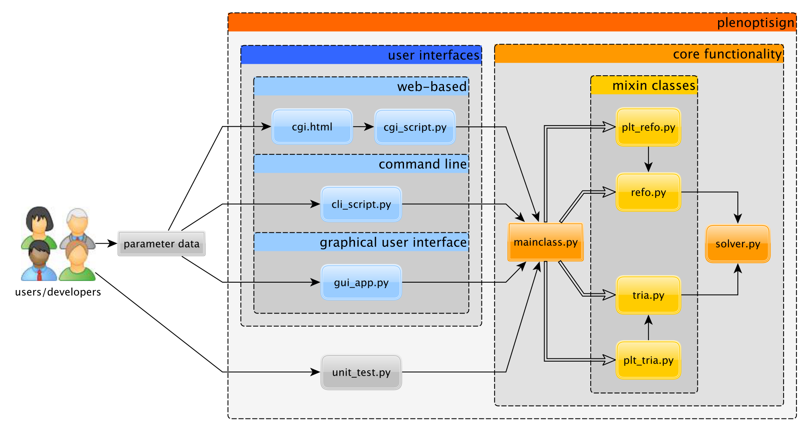

3. API documentation¶
3.1. Architecture¶
A schematic overview of PlenoptiSign’s architecture is seen in the diagram below:
As the mainclass.py and the solver.py will be of primary interest for future extensions, both are documented hereafter.
3.2. MainClass¶
-
class
plenoptisign.MainClass(data=None)¶ The MainClass stores optical parameters and performs numerical light field geometry calculations.
It is made of five Mixin classes which are laid off in separate files containing methods for distance retrieval. The main methods to compute the plenoptic geometry are
refo()andtria(). The Mixin classes share the optical parameters which are initialized as seen in__init__()below.Usage example:
>> import plenoptisign >> obj = plenoptisign.MainClass() >> obj.refo() >> results = obj.get_results() >> print(results)
-
__init__(data=None)¶ Initialize plenoptic camera parameters with following instance variables:
- Parameters
data (dict) – dictionary containing input parameters (see full description below)
d (float) – refocusing distance
d_p (float) – far depth of field border in refocusing
d_m (float) – near depth of field border in refocusing
dof (float) – depth of field
B (float) – baseline at entrance pupil of the main lens
phi (float) – tilt angle of virtual camera
Z (float) – triangulation distance
bU (float) – main lens image distance
console_msg (str) – text for console output
Note
Insightful description of the parameter terminology can be found in the author’s publications:
Refocusing distance of a standard plenoptic camera, Hahne et al., OpticsExpress, [BibTeX]
Baseline and triangulation geometry in a standard plenoptic camera, Hahne et al., Int. J. of Comp. Vis., [BibTeX]
If you find this work helpful for your research, please cite as appropriate.
-
static
axis_equal_3D(ax)¶
-
compute_img_dist()¶ This method iteratively computes the main lens image distance \(b_U\) via \(b_U = (\frac{1}{f_U}-\frac{1}{a_U})^{-1}\) until both sides match. The initial value is \(b_U=f_U\).
- Returns
True
- Return type
-
compute_mic_img_size()¶ This method mutates the micro image size \(M\) according to \(M = \frac{D \times f_s}{f_U \times p_p}\).
- Returns
True
- Return type
-
compute_pupil_size()¶ This method estimates the pupil size \(D\) of the main lens via \(D = \frac{M \times f_U \times p_p}{f_s}.\)
- Returns
True
- Return type
-
get_results()¶ This is the getter function for output parameters. See
__init__()for more details on the parameters.- Returns
list(d, d_p, d_m, dof, B, phi, Z)
- Return type
-
static
non_inf_max(input)¶ This function computes the maximum value from an input list without consideration of infinity.
-
plt_3d(plt3d, amin, dep_type=False, ray_th=0.75)¶ This method draws depth planes in 3-D space based on provided depth method (e.g.
refo()).
-
plt_3d_init(fig, plt3d, elev=10, azim=135)¶ This method initializes parameters for plots in 3-D space that only need to be set once.
-
plt_refo(ax, plane_th=0.9, ray_th=0.75, fontsize=12)¶ This method draws the refocusing distance and depth of field limits in 2-D space based on
refo().
-
plt_tria(ax, plane_th=0.9, ray_th=0.75, fontsize=12)¶ This method draws the triangulation distance in 2-D space calculated from
tria().
-
refo()¶ This method computes the distance \(d_a\) and depth of field limits \(d_{a\pm }\) of a plane that is computationally focused based on a standard plenoptic camera. The instance variables that are mutated are as follows
-
tria()¶ This method computes depth plane distance \(Z_{(G, \Delta x)}\), virtual camera tilt \(\Phi_G\) and baseline \(B_G\) of a standard plenoptic camera. The instance variables that are mutated are as follows:
-
data¶ Instance variable of type dict containing input parameters with following keys
- Keyword Arguments
data['pp'] – pixel pitch
data['fs'] – focal length of micro lens
data['hh'] – principal plane separation of micro lens
data['pm'] – micro lens pitch
data['dA'] – exit pupil distance
data['fU'] – focal length of objective lens
data['HH'] – principal plane spacing in objective lens
data['df'] – object distance
data['f_num'] – main lens entrance pupil diameter
data['a'] – iterative refocusing parameter
data['M'] – 1-D micro image diameter
data['G'] – viewpoint gap
data['dx'] – disparity value
-
-
plenoptisign.solve_sle(A, b)¶ This function is an algebraic function solver for a system of linear equations of the general form \(Ax=b\). In this application, its purpose is to solve for intersecting ray functions.